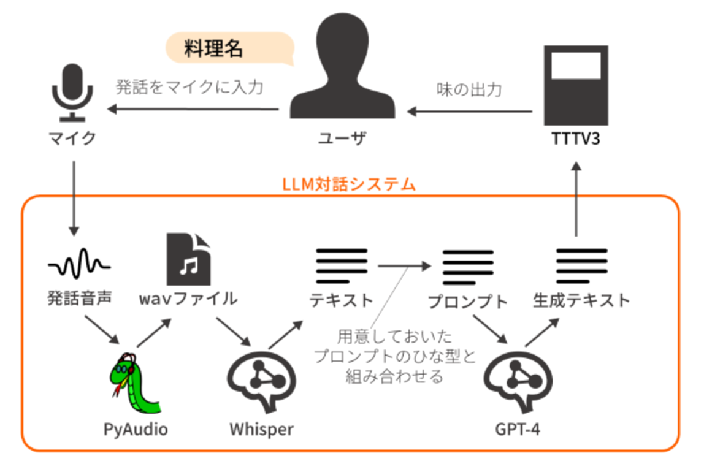
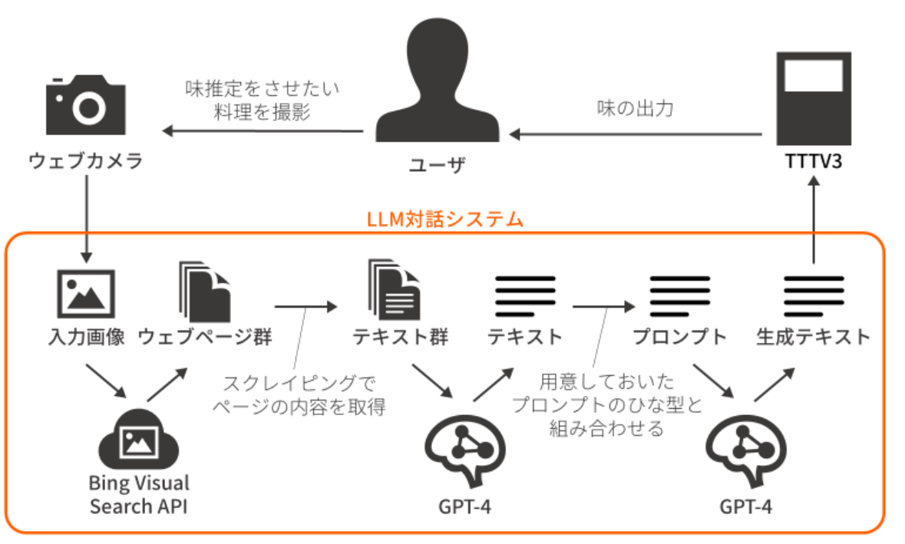

概要
TTTV3は，20種の溶液を 0.02ml単位で混合し加えることで飲食物の味を変える調味家電である．一味に対して複数の溶液を用いて風味を近づけることができ，産地による違いも再現できる．アルカリ性物質の添加による中和，味覚修飾物質の活用，他の味によるマスキング効果を利用することで元の食品の味よりも特定の味を薄く感じさせる「味の減算」も行える．料理名をマイクで入力したり，画像をウェブカメラで見せたりすると， LLMによって味を推定して出力することが可能である．また，LLMと対話して味を調整することもでき，膨大な味空間のなかで未知の味を探索することもできる．（論文より引用）
担当
TTTV3のソフトウェア全般を担当。他にはハードウェア担当と味担当が存在した。
論文（PDF）
http://id.nii.ac.jp/1001/00227378/
発表
エンタテインメントコンピューティングシンポジウム2023研究室DB（書誌情報など）
https://www.miyashita.com/researches/7HZCTCGjtmlL2IqIqOCyu8実装
概要LLM（GPT-4）とのインタラクションによって味の推定や探索を行うシステム。Python3.10にて実装。チャットやスライダといったUIの見た目をリッチにするためFlaskとHTML/CSS/JSを利用。
対話によるインタラクション システムに備え付けられているマイクに入力された音声をWhisperによってテキストに変換。味担当が作成したプロンプトの型と組み合わせたものをLLMへと入力し、生成されたテキストから数値情報を抜き出しTTTV3本体に送信する。
写真によるインタラクション システムに備え付けられているWebカメラによって飲食物の写真を撮影。Bing Visual Searchによって料理名を推定し、情報を取得。取得した情報をLLM（GPT-4）によってまとめ、味担当が作成したプロンプトの型と組み合わせたものを再度LLMへと入力。生成されたテキストから数値情報を抜き出しTTTV3本体に送信する。
コメント
このころはGPT系に画像が入力できなかったのでこんなめんどくさい仕組みにしていますが、今となってはGPT系に音声でも画像でもなんでも入力できる！（すごい）のでもっとシンプルな構成にできること間違いなし。